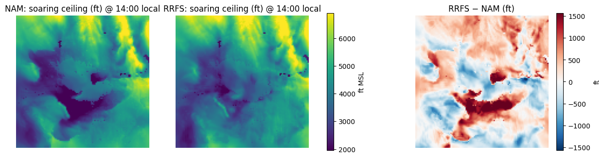
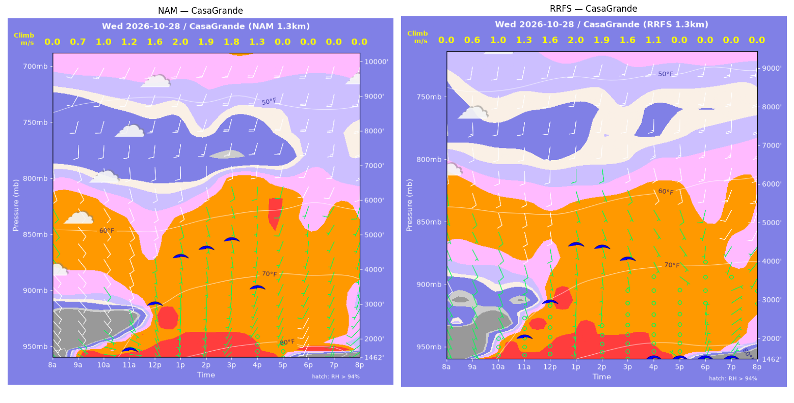
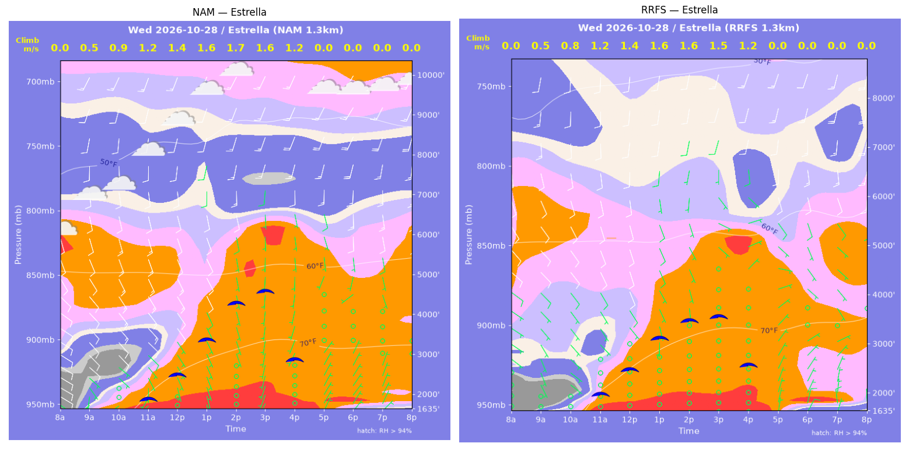
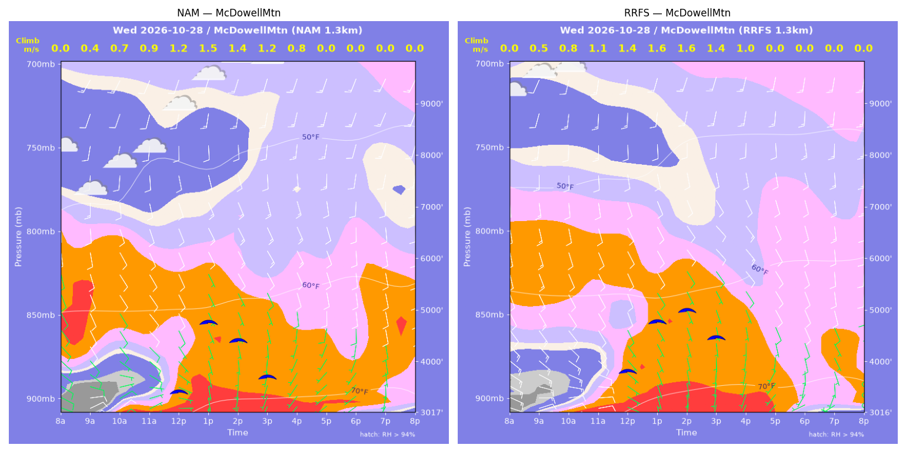
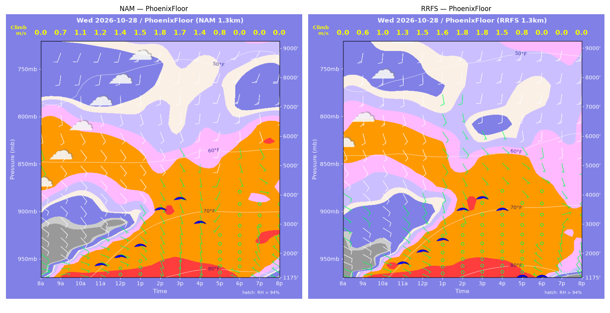
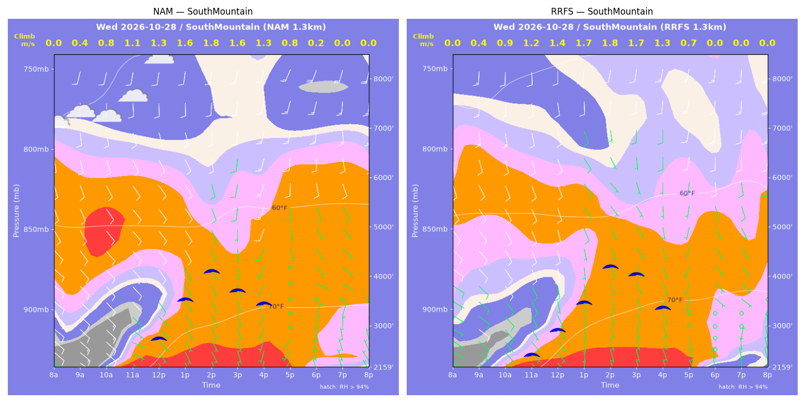
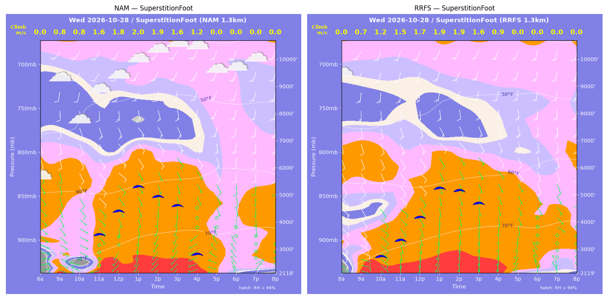
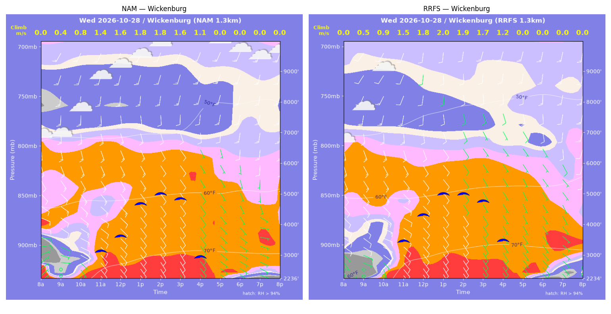

../runs/ab-phoenix-nam — model nam, cycle 2026-10-27 18z, dx 1.3333333740234374 km, 13 hours, grid 114×114../runs/ab-phoenix-rrfs — model rrfs, cycle 2026-10-27 18z, dx 1.3333333740234374 km, 13 hours, grid 114×114Grids identical; afternoon = 12:00–17:59 local (UTC-7). Δ = RRFS − NAM.
| Site | terrain ft | BL top (AGL) med|Δ| / bias (ft) | w* med|Δ| / bias (fpm) | Soaring ceiling med|Δ| / bias (ft) | BL wind speed med|Δ| / bias (kt) | BL wind dir med|Δ| / bias (deg) | 2 m temperature med|Δ| / bias (F) | Sfc LCL (AGL) med|Δ| / bias (ft) | Sensible heat flux med|Δ| / bias (W/m2) |
|---|---|---|---|---|---|---|---|---|---|
| PhoenixFloor | 1175 | 169 / +308 | 10 / +10 | 105 / +113 | 2 / -2 | 20 / -10 | 1 / +1 | 1899 / +1865 | 7 / +9 |
| SouthMountain | 2160 | 233 / -73 | 12 / +5 | 105 / +45 | 3 / -4 | 26 / -2 | 1 / +1 | 2021 / +2050 | 10 / +15 |
| SuperstitionFoot | 2119 | 232 / +47 | 10 / -15 | 132 / -127 | 1 / -0 | 4 / -17 | 1 / +1 | 2338 / +2475 | 17 / -15 |
| Estrella | 1635 | 575 / -573 | 6 / -11 | 299 / -419 | 3 / -3 | 14 / -32 | 0 / -0 | 1526 / +1448 | 8 / +8 |
| Wickenburg | 2236 | 392 / -76 | 17 / +22 | 202 / +211 | 3 / -2 | 14 / -13 | 1 / +1 | 1669 / +1733 | 34 / +29 |
| CasaGrande | 1462 | 265 / -520 | 6 / -10 | 182 / -523 | 2 / -2 | 14 / +6 | 0 / +0 | 1463 / +1473 | 2 / +2 |
| McDowellMtn | 3017 | 409 / +191 | 34 / +30 | 201 / +264 | 2 / -1 | 10 / -8 | 1 / +1 | 2392 / +2300 | 38 / +33 |
| Metric | n | median |Δ| | p90 |Δ| | bias |
|---|---|---|---|---|
| BL top (AGL) (ft) | 42 | 300 | 1109 | -99 |
| w* (fpm) | 42 | 13 | 35 | +5 |
| Soaring ceiling (ft) | 42 | 136 | 706 | -62 |
| BL wind speed (kt) | 42 | 2 | 4 | -2 |
| BL wind dir (deg) | 42 | 12 | 53 | -11 |
| 2 m temperature (F) | 42 | 1 | 1 | +1 |
| Sfc LCL (AGL) (ft) | 42 | 1886 | 2466 | +1906 |
| Sensible heat flux (W/m2) | 42 | 13 | 43 | +11 |
diffmap_tol.png| local | BL top NAM/RRFS ft | w* NAM/RRFS fpm | ceiling NAM/RRFS ft | BL wind NAM/RRFS | T2 NAM/RRFS F | HFX NAM/RRFS |
|---|---|---|---|---|---|---|
| 08:00 | 0 / 0 | 0 / 0 | 1175 / 1175 | 3kt@056 / 5kt@109 | 62 / 61 | 0 / 0 |
| 09:00 | 786 / 511 | 143 / 126 | 1175 / 1175 | 9kt@123 / 8kt@113 | 67 / 66 | 57 / 60 |
| 10:00 | 1227 / 1011 | 211 / 199 | 1175 / 1175 | 10kt@136 / 9kt@125 | 70 / 71 | 118 / 121 |
| 11:00 | 1485 / 1476 | 244 / 252 | 1680 / 1732 | 7kt@107 / 7kt@126 | 73 / 74 | 153 / 170 |
| 12:00 | 1748 / 1909 | 269 / 289 | 1938 / 2109 | 7kt@123 / 6kt@144 | 77 / 78 | 174 / 199 |
| 13:00 | 2222 / 2399 | 295 / 311 | 2293 / 2455 | 9kt@147 / 6kt@166 | 79 / 80 | 183 / 198 |
| 14:00 | 3930 / 3836 | 353 / 355 | 3507 / 3459 | 9kt@150 / 8kt@148 | 82 / 82 | 177 / 184 |
| 15:00 | 4589 / 4529 | 342 / 346 | 3838 / 3823 | 8kt@148 / 6kt@137 | 83 / 83 | 139 / 145 |
| 16:00 | 4125 / 4639 | 273 / 288 | 3025 / 3432 | 9kt@188 / 7kt@155 | 83 / 84 | 78 / 82 |
| 17:00 | 3222 / 4370 | 155 / 161 | 1175 / 1175 | 8kt@200 / 5kt@145 | 83 / 83 | 18 / 15 |
| 18:00 | 829 / 561 | 0 / 0 | 1175 / 1175 | 2kt@305 / 3kt@318 | 82 / 81 | -0 / -1 |
| 19:00 | 307 / 433 | 0 / 0 | 1175 / 1175 | 3kt@318 / 6kt@330 | 80 / 79 | -1 / -4 |
| 20:00 | 315 / 362 | 0 / 0 | 1175 / 1175 | 6kt@304 / 8kt@334 | 78 / 77 | -5 / -6 |
| local | BL top NAM/RRFS ft | w* NAM/RRFS fpm | ceiling NAM/RRFS ft | BL wind NAM/RRFS | T2 NAM/RRFS F | HFX NAM/RRFS |
|---|---|---|---|---|---|---|
| 08:00 | 0 / 0 | 0 / 0 | 2160 / 2160 | 7kt@122 / 4kt@118 | 61 / 62 | 0 / 0 |
| 09:00 | 121 / 248 | 76 / 78 | 2160 / 2160 | 12kt@136 / 5kt@114 | 66 / 68 | 56 / 29 |
| 10:00 | 452 / 651 | 160 / 172 | 2160 / 2160 | 11kt@126 / 7kt@132 | 67 / 69 | 140 / 121 |
| 11:00 | 1073 / 1089 | 220 / 237 | 2160 / 2484 | 9kt@125 / 6kt@141 | 70 / 71 | 153 / 190 |
| 12:00 | 1555 / 1666 | 262 / 285 | 2804 / 2960 | 10kt@143 / 6kt@166 | 73 / 74 | 180 / 217 |
| 13:00 | 2580 / 2372 | 321 / 326 | 3577 / 3483 | 9kt@150 / 7kt@161 | 76 / 76 | 200 / 229 |
| 14:00 | 3319 / 3340 | 354 / 362 | 4133 / 4176 | 8kt@157 / 5kt@135 | 77 / 77 | 210 / 223 |
| 15:00 | 2945 / 3303 | 312 / 329 | 3735 / 4014 | 7kt@180 / 4kt@141 | 77 / 78 | 162 / 169 |
| 16:00 | 3161 / 2904 | 261 / 260 | 3459 / 3342 | 12kt@202 / 3kt@174 | 78 / 79 | 88 / 95 |
| 17:00 | 2376 / 1911 | 158 / 137 | 2160 / 2160 | 5kt@166 / 4kt@206 | 77 / 78 | 26 / 21 |
| 18:00 | 237 / 84 | 38 / 0 | 2160 / 2160 | 3kt@340 / 2kt@332 | 76 / 76 | 4 / -0 |
| 19:00 | 430 / 354 | 0 / 0 | 2160 / 2160 | 4kt@341 / 5kt@359 | 75 / 74 | -0 / -1 |
| 20:00 | 332 / 552 | 0 / 0 | 2160 / 2160 | 5kt@336 / 8kt@351 | 74 / 73 | -1 / -2 |
| local | BL top NAM/RRFS ft | w* NAM/RRFS fpm | ceiling NAM/RRFS ft | BL wind NAM/RRFS | T2 NAM/RRFS F | HFX NAM/RRFS |
|---|---|---|---|---|---|---|
| 08:00 | 0 / 0 | 0 / 0 | 2119 / 2119 | 7kt@069 / 4kt@100 | 60 / 66 | 0 / 0 |
| 09:00 | 1241 / 1157 | 150 / 140 | 2119 / 2119 | 6kt@126 / 9kt@127 | 75 / 74 | 42 / 36 |
| 10:00 | 480 / 2143 | 158 / 239 | 2119 / 2787 | 2kt@205 / 9kt@132 | 72 / 76 | 127 / 99 |
| 11:00 | 2790 / 2597 | 306 / 287 | 3583 / 3378 | 9kt@135 / 10kt@139 | 76 / 77 | 161 / 141 |
| 12:00 | 3839 / 3602 | 358 / 339 | 4421 / 4192 | 10kt@132 / 11kt@136 | 78 / 78 | 188 / 168 |
| 13:00 | 5030 / 4993 | 393 / 380 | 5308 / 5229 | 12kt@143 / 11kt@138 | 79 / 80 | 189 / 172 |
| 14:00 | 4612 / 4950 | 369 / 364 | 4937 / 5121 | 12kt@142 / 10kt@140 | 80 / 81 | 171 / 153 |
| 15:00 | 4494 / 4678 | 322 / 315 | 4596 / 4644 | 8kt@146 / 12kt@147 | 80 / 81 | 117 / 104 |
| 16:00 | 3622 / 3886 | 227 / 182 | 2806 / 2119 | 7kt@147 / 6kt@140 | 80 / 80 | 50 / 23 |
| 17:00 | 688 / 462 | 0 / 0 | 2119 / 2119 | 5kt@306 / 3kt@212 | 76 / 76 | -2 / -1 |
| 18:00 | 509 / 85 | 0 / 0 | 2119 / 2119 | 6kt@324 / 4kt@004 | 71 / 73 | -5 / -2 |
| 19:00 | 272 / 262 | 0 / 0 | 2119 / 2119 | 4kt@039 / 3kt@328 | 71 / 72 | -11 / -1 |
| 20:00 | 85 / 263 | 0 / 0 | 2119 / 2119 | 6kt@045 / 4kt@032 | 70 / 70 | -5 / -7 |
| local | BL top NAM/RRFS ft | w* NAM/RRFS fpm | ceiling NAM/RRFS ft | BL wind NAM/RRFS | T2 NAM/RRFS F | HFX NAM/RRFS |
|---|---|---|---|---|---|---|
| 08:00 | 0 / 0 | 0 / 0 | 1635 / 1635 | 7kt@121 / 3kt@143 | 59 / 64 | 0 / 0 |
| 09:00 | 361 / 274 | 90 / 90 | 1635 / 1635 | 3kt@159 / 3kt@147 | 68 / 68 | 31 / 40 |
| 10:00 | 943 / 518 | 175 / 151 | 1635 / 1635 | 7kt@129 / 3kt@118 | 70 / 70 | 86 / 102 |
| 11:00 | 1434 / 1392 | 228 / 237 | 1940 / 2043 | 8kt@134 / 4kt@126 | 74 / 74 | 127 / 147 |
| 12:00 | 2038 / 1911 | 271 / 277 | 2541 / 2515 | 9kt@144 / 8kt@148 | 76 / 76 | 152 / 173 |
| 13:00 | 3195 / 2764 | 320 / 313 | 3389 / 3119 | 11kt@154 / 8kt@155 | 78 / 78 | 160 / 174 |
| 14:00 | 4571 / 3336 | 343 / 317 | 4290 / 3445 | 9kt@169 / 5kt@146 | 80 / 80 | 137 / 149 |
| 15:00 | 5313 / 3827 | 323 / 291 | 4571 / 3524 | 10kt@191 / 5kt@107 | 81 / 80 | 99 / 101 |
| 16:00 | 4622 / 3970 | 233 / 229 | 2866 / 2538 | 7kt@173 / 4kt@076 | 80 / 80 | 42 / 47 |
| 17:00 | 815 / 1312 | 0 / 0 | 1635 / 1635 | 6kt@034 / 5kt@039 | 78 / 78 | -1 / -4 |
| 18:00 | 855 / 633 | 0 / 0 | 1635 / 1635 | 6kt@031 / 7kt@031 | 74 / 73 | -4 / -7 |
| 19:00 | 569 / 543 | 0 / 0 | 1635 / 1635 | 5kt@022 / 6kt@020 | 73 / 72 | -3 / -6 |
| 20:00 | 459 / 421 | 0 / 0 | 1635 / 1635 | 5kt@036 / 7kt@012 | 72 / 70 | -3 / -7 |
| local | BL top NAM/RRFS ft | w* NAM/RRFS fpm | ceiling NAM/RRFS ft | BL wind NAM/RRFS | T2 NAM/RRFS F | HFX NAM/RRFS |
|---|---|---|---|---|---|---|
| 08:00 | 0 / 0 | 0 / 0 | 2236 / 2235 | 7kt@049 / 2kt@321 | 59 / 56 | 0 / 0 |
| 09:00 | 316 / 264 | 80 / 96 | 2236 / 2235 | 2kt@046 / 2kt@305 | 66 / 63 | 23 / 50 |
| 10:00 | 817 / 767 | 160 / 168 | 2236 / 2235 | 10kt@119 / 10kt@126 | 70 / 69 | 74 / 94 |
| 11:00 | 2223 / 2476 | 266 / 300 | 3187 / 3504 | 14kt@132 / 13kt@122 | 74 / 75 | 126 / 169 |
| 12:00 | 2725 / 3480 | 307 / 359 | 3668 / 4323 | 14kt@142 / 12kt@148 | 75 / 76 | 159 / 206 |
| 13:00 | 4138 / 4371 | 354 / 388 | 4698 / 4989 | 13kt@154 / 10kt@144 | 76 / 77 | 161 / 208 |
| 14:00 | 4698 / 4445 | 351 / 370 | 5014 / 4959 | 11kt@163 / 8kt@144 | 77 / 78 | 138 / 178 |
| 15:00 | 4868 / 4466 | 312 / 326 | 4837 / 4724 | 9kt@161 / 7kt@142 | 77 / 78 | 92 / 120 |
| 16:00 | 4578 / 4169 | 225 / 236 | 2963 / 3451 | 9kt@173 / 7kt@139 | 76 / 78 | 35 / 48 |
| 17:00 | 3286 / 2904 | 0 / 0 | 2236 / 2235 | 6kt@152 / 6kt@149 | 74 / 74 | -3 / -4 |
| 18:00 | 471 / 508 | 0 / 0 | 2236 / 2235 | 6kt@128 / 7kt@138 | 70 / 69 | -3 / -6 |
| 19:00 | 84 / 262 | 0 / 0 | 2236 / 2235 | 6kt@090 / 5kt@141 | 68 / 67 | -4 / -3 |
| 20:00 | 84 / 84 | 0 / 0 | 2236 / 2235 | 7kt@086 / 3kt@103 | 67 / 66 | -6 / -2 |
| local | BL top NAM/RRFS ft | w* NAM/RRFS fpm | ceiling NAM/RRFS ft | BL wind NAM/RRFS | T2 NAM/RRFS F | HFX NAM/RRFS |
|---|---|---|---|---|---|---|
| 08:00 | 0 / 0 | 0 / 0 | 1462 / 1462 | 4kt@122 / 4kt@134 | 56 / 58 | 0 / 0 |
| 09:00 | 567 / 365 | 141 / 118 | 1462 / 1462 | 8kt@136 / 4kt@152 | 64 / 66 | 75 / 69 |
| 10:00 | 812 / 967 | 192 / 196 | 1462 / 1462 | 9kt@131 / 5kt@151 | 69 / 72 | 135 / 120 |
| 11:00 | 1136 / 1602 | 231 / 257 | 1742 / 2096 | 7kt@153 / 7kt@171 | 74 / 76 | 169 / 165 |
| 12:00 | 2855 / 2717 | 323 / 322 | 3039 / 2958 | 9kt@170 / 9kt@171 | 79 / 80 | 185 / 192 |
| 13:00 | 4617 / 4644 | 388 / 392 | 4368 / 4403 | 11kt@170 / 9kt@179 | 82 / 82 | 199 / 204 |
| 14:00 | 5056 / 4664 | 377 / 369 | 4596 / 4313 | 11kt@167 / 8kt@170 | 83 / 83 | 168 / 170 |
| 15:00 | 5748 / 4599 | 346 / 321 | 4820 / 3990 | 11kt@176 / 8kt@157 | 84 / 84 | 113 / 114 |
| 16:00 | 5495 / 3994 | 248 / 219 | 3443 / 1462 | 11kt@187 / 7kt@148 | 84 / 84 | 44 / 41 |
| 17:00 | 367 / 401 | 0 / 0 | 1462 / 1462 | 2kt@218 / 2kt@302 | 81 / 80 | -0 / -1 |
| 18:00 | 730 / 336 | 0 / 0 | 1462 / 1462 | 10kt@208 / 6kt@010 | 75 / 74 | -13 / -6 |
| 19:00 | 383 / 85 | 0 / 0 | 1462 / 1462 | 8kt@198 / 7kt@027 | 73 / 72 | -8 / -6 |
| 20:00 | 85 / 269 | 0 / 0 | 1462 / 1462 | 4kt@224 / 10kt@016 | 70 / 69 | -3 / -11 |
| local | BL top NAM/RRFS ft | w* NAM/RRFS fpm | ceiling NAM/RRFS ft | BL wind NAM/RRFS | T2 NAM/RRFS F | HFX NAM/RRFS |
|---|---|---|---|---|---|---|
| 08:00 | 0 / 0 | 0 / 0 | 3017 / 3017 | 6kt@102 / 10kt@101 | 60 / 62 | 0 / 0 |
| 09:00 | 216 / 321 | 74 / 93 | 3017 / 3017 | 7kt@059 / 10kt@088 | 63 / 66 | 25 / 38 |
| 10:00 | 550 / 652 | 136 / 163 | 3017 / 3017 | 6kt@074 / 11kt@101 | 66 / 67 | 65 / 100 |
| 11:00 | 822 / 1129 | 173 / 216 | 3017 / 3017 | 7kt@118 / 10kt@132 | 68 / 70 | 92 / 137 |
| 12:00 | 1819 / 1961 | 232 / 267 | 3484 / 3860 | 8kt@151 / 10kt@159 | 71 / 72 | 100 / 148 |
| 13:00 | 3578 / 3203 | 294 / 321 | 4805 / 4778 | 13kt@156 / 10kt@153 | 73 / 74 | 103 / 159 |
| 14:00 | 3128 / 3570 | 276 / 320 | 4448 / 4976 | 12kt@151 / 11kt@147 | 73 / 75 | 98 / 141 |
| 15:00 | 2694 / 3167 | 233 / 274 | 3737 / 4446 | 11kt@153 / 11kt@140 | 73 / 75 | 67 / 99 |
| 16:00 | 1977 / 2436 | 157 / 190 | 3017 / 3017 | 9kt@175 / 8kt@149 | 73 / 75 | 26 / 42 |
| 17:00 | 772 / 775 | 0 / 0 | 3017 / 3017 | 6kt@225 / 3kt@214 | 71 / 73 | -2 / -2 |
| 18:00 | 1001 / 324 | 0 / 0 | 3017 / 3017 | 6kt@199 / 4kt@214 | 69 / 69 | -1 / -1 |
| 19:00 | 326 / 84 | 0 / 0 | 3017 / 3017 | 4kt@191 / 4kt@290 | 69 / 68 | -1 / -1 |
| 20:00 | 277 / 84 | 0 / 0 | 3017 / 3017 | 4kt@086 / 2kt@337 | 66 / 68 | -2 / -1 |
montage_PhoenixFloor.pngmontage_SouthMountain.pngmontage_SuperstitionFoot.pngmontage_Estrella.pngmontage_Wickenburg.pngmontage_CasaGrande.pngmontage_McDowellMtn.png